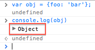
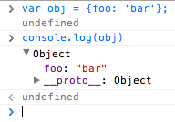

Inspecting variables in JavaScript consoles - Timing is important
Already a while back, there was an interesting question on Stack Overflow (I will link to it if I find it).
It was about logging objects which got populated by an Ajax callback. Now we all know that the code that immediately follows the Ajax call is executed before the response callback is executed:
// Using jQuery only as example
var obj = {}; // 1
$.get('/some/url', function() { // 2
obj.foo = 'bar'; // 5
});
console.log(obj); // 3
console.log(obj.foo); // 4
The questioner’s problem was that the output from the line marked with 4 was
undefined but the object logged one line before clearly showed that it
has the property foo.
What is going on here? #
The problem was that the console does not actually show the whole object, but only a line with a handle to inspect it further, something like this (the pictures are showing the Chrome console) :

Only after clicking the arrow, you can see the object’s structure:

This made me think and a small experiment confirmed my assumption:
When you click on the handle, it does not show the content of the object at the time when it was logged, but the content it has now.
You can try it yourself (this is even more mysterious as FireBug shows the current content immediately):
Back to the Ajax situation: The questioners problem was that at time he clicked the handle to inspect the contents, the Ajax call already returned, giving him the impression that he actually has access to the properties in the code following the call.
What do we learn from that? Don’t trust every output :)